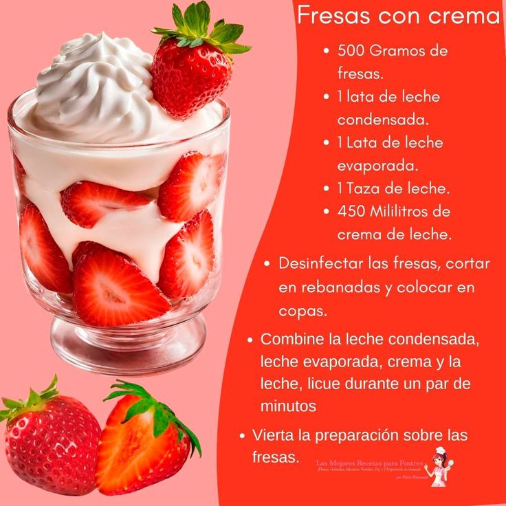
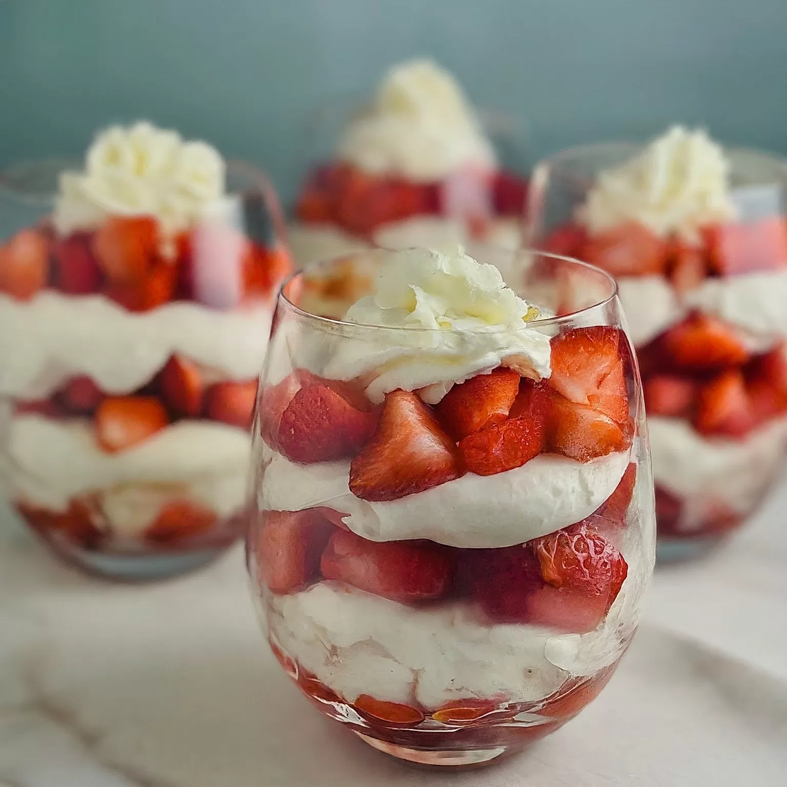

Ingredientes
- 2 tazas de fresas frescas
- 1 taza de crema espesa (nata para montar)
- 2 cucharadas de azúcar
- 1 cucharadita de vainilla (opcional)

Preparación
- Lava y corta las fresas en mitades o cuartos.
- En un tazón, bate la crema con el azúcar y la vainilla hasta que esté suave y esponjosa.
- Sirve las fresas en copas o platos y cúbrelas con la crema batida.
- Opcional: decora con hojas de menta o ralladura de chocolate blanco.
- Y listo ya tenemos nuestras deliciosas fresas con crema.

Disfruta este postre frío y refrescante en cualquier momento.